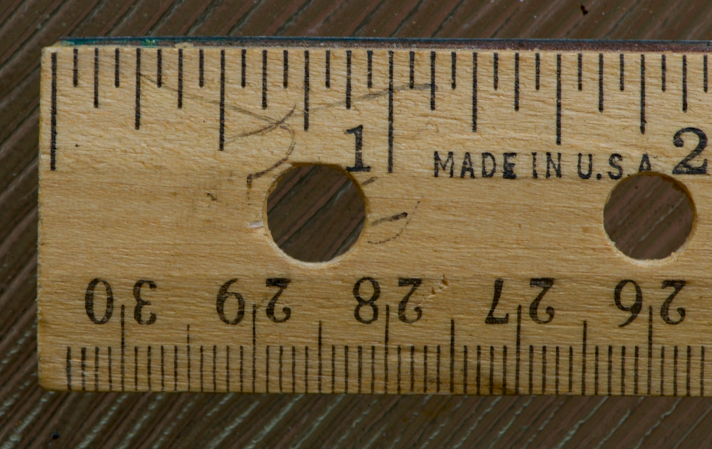

9 המרה בשיטת השרשרת
שיטת השרשרת היא מתנה שלא מפסיקה לתת. קשה להפריז בתועלת שלה.
נתחיל מאותה תובנה שהכרנו בפרק פעולות על התחיליות:
תמיד אפשר להכפיל מספר באחת.
נראה לי שהכי טוב לפתור דוגמה ראשונה ולראות איך זה עובד.
9.1 דוגמה ראשונה

יש לי סרגל באורך 12 אינץ׳. מה אורכו בסנטימטרים? ידוע לנו ש-1 \text{ inch} = 2.54 \text{ cm}.
אולי לא צריך שיטות מתוחכמות כדי לפתור את התרגיל הזה, אבל הרעיון הוא להתחיל בדוגמאות פשוטות מאוד, כי העניינים יסתבכו מהר.
הדבר הראשון שצריך לעשות הוא לחלק את המידע שקיבלנו לשלוש קטגוריות:
- קלט: נקודת ההתחלה של החישוב. כאן זהו הסרגל שאורכו 12 אינץ׳.
- פלט: מה שנרצה למצוא בסוף התרגיל — האורך בסנטימטרים.
- נתוני ההמרה: כאן הנתון הוא 1 \text{ inch} = 2.54 \text{ cm}.
המבנה הבסיסי של שיטת השרשרת הוא:
נציב את הקלט ואת הפלט מהבעיה שלנו:
מה צריכות להיות פעולות ההמרה? אפשר לעבד את נתוני ההמרה שקיבלנו כדי לקבל שני ביטויים ששווים ל-1:
עכשיו אפשר פשוט להכפיל את הקלט ב-1 ולצמצם את היחידות:
12 \text{ inch} = 12 \ccancel{gray}{inch} \underbrace{\left( \frac{2.54 \text{ cm}}{1 \ccancel{gray}{inch}} \right)}_{1} = 12\cdot 2.54 \text{ cm} = \boxed{30.48 \text{ cm}}
איך ידעתי באיזה מגורמי ההמרה להשתמש? רק אחד מהם מאפשר לצמצם את האינץ׳ שבקלט עם האינץ׳ שבמכנה של גורם ההמרה. אילו בחרתי באפשרות השנייה, הייתי מקבל:
12 \text{ inch} = 12 \text{ inch} \underbrace{\left( \frac{1 \text{ inch}}{2.54 \text{ cm}} \right)}_{1} = \begin{gathered}\text{עכשיו נתקעתי,}\\\text{אין מה לצמצם}\end{gathered}
ננסה עוד תרגיל פשוט.
9.2 רכבת נוסעת…
רכבת נוסעת במהירות קבועה של 90 קמ״ש. כמה קילומטרים היא עברה אחרי חצי שעה?
- קלט: 0.5 שעה
- פלט: מרחק בקילומטרים
- נתוני ההמרה: הרכבת נוסעת במהירות של 90 קמ״ש, ולכן נכתוב: 90\text{ km}=1\text{ h} \longrightarrow 1 = \left(\frac{90\text{ km}}{1\text{ h}}\right) = \left(\frac{1\text{ h}}{90\text{ km}} \right)
זה מרגיש קצת שונה מהדוגמה הראשונה. אינץ׳ אחד ו-2.54 סנטימטרים הם שניהם אורכים, והם תמיד שווים זה לזה, כך שחלוקה של אחד בשני אמורה תמיד לתת 1. בתרגיל הזה כתבנו ש-90\text{ km}=1\text{ h}, וזה מוזר: אנחנו אומרים שאורך שווה למשך זמן. בהקשר של בעיית הרכבת זה תמיד נכון, ולכן אפשר להמשיך כמו קודם ולפתור את הבעיה:
0.5 \text{ h} = 0.5 \ccancel{gray}{h} \left(\frac{90\text{ km}}{1\ccancel{gray}{h}}\right) = 0.5\cdot 90 \text{ km} = \boxed{45 \text{ km}}
שימו לב שאני תמיד כותב את גורמי ההמרה בסוגריים, כדי שיהיה ברור לי ולאחרים מה קורה. אין חובה לעשות זאת, אבל זה עוזר לראות את מבנה החישוב.
9.3 שרשור המרות
עכשיו נפתור דוגמה עם כמה המרות, ונראה למה קוראים לשיטה הזאת ״שיטת השרשרת״.

ב-18 בספטמבר 2026 מחיר הבנזין בארצות הברית היה 4.47 דולר לגלון. מהו המחיר בשקלים לליטר? ידוע לנו שבאותו תאריך דולר אחד היה שווה 3.04 שקלים, ושגלון אחד שווה בקירוב ל-3.79 ליטרים.
- קלט: 4.47 דולר לגלון
- פלט: מחיר בשקלים לליטר
- נתוני ההמרה: הפעם יש לנו שתי המרות: 1 \text{ USD} = 3.04 \text{ NIS} \longrightarrow 1 = \left(\frac{1 \text{ USD}}{3.04 \text{ NIS}}\right) = \left(\frac{3.04 \text{ NIS}}{1 \text{ USD}} \right) \\ \phantom{a} \\ 1 \text{ gallon} = 3.79 \text{ liter} \longrightarrow 1 = \left(\frac{1 \text{ gallon}}{3.79 \text{ liter}}\right) = \left(\frac{3.79 \text{ liter}}{1 \text{ gallon}} \right)
הגיע הזמן לפתור:
\begin{align*} 4.47\, \frac{\text{USD}}{\text{gallon}} &= 4.47\, \frac{\ccancel{gray}{USD}}{\bcancel{\text{gallon}}} \left(\frac{3.04 \text{ NIS}}{1 \ccancel{gray}{USD}} \right) \left(\frac{1 \bcancel{\text{ gallon}}}{3.79 \text{ liter}}\right) \\ &= \frac{4.47 \cdot 3.04}{3.79} \frac{\text{NIS}}{\text{liter}} \\ &= \boxed{3.59 \, \frac{\text{NIS}}{\text{liter}}} \end{align*}
כמה הערות.
- אפשר היה לבצע את ההמרה בשני שלבים: קודם להמיר את המטבע ואחר כך את הנפח. זה בסדר גמור, אבל דורש קצת יותר נייר.
- רואים איך ההמרות מתחברות כמו חוליות בשרשרת, זוג סוגריים אחרי זוג סוגריים. השתמשתי בקווי צמצום שונים כדי להבהיר מה מצטמצם עם מה.
- כשבחרתי באיזו צורה לכתוב את גורמי ההמרה שבסוגריים, וידאתי שאפשר לצמצם יחידה שבמונה של הקלט עם יחידה שבמכנה של גורם ההמרה, ולהפך.
9.4 כמה חוליות (אנחנו יכולים!)
חקלאי באירופה קוצר חיטה בשדה מלבני שמידותיו 120 \text{ m} \times 70 \text{ m}. יבול החיטה בשדה הוא 4.94 טונות להקטר. מה תהיה ההכנסה של החקלאי (באירו), אם יוכל למכור את החיטה בשוק האמריקאי במחיר של 7.27 דולר לבושל? נתונים נוספים:
- ב-18 בספטמבר 2026 אירו אחד היה שווה 1.15 דולר אמריקאי.
- הקטר אחד הוא שטח של 10^4 מטרים רבועים.
- טונה אחת היא 1000 \text{ kg}.
- בושל אחד של חיטה שוקל 60 פאונד.
- קילוגרם אחד שווה בקירוב ל-2.2 פאונד.
- קלט: נתונות לנו מידות השדה, ולכן הגיוני לחשב מהן את השטח ולהשתמש בו בתור הקלט: 120 \text{ m} \times 70 \text{ m}=8400 \text{ m}^2
- פלט: סכום הכסף באירו
- נתוני ההמרה: יש לנו כמה המרות: 1 \text{ EUR} = 1.15 \text{ USD} \longrightarrow 1 = \left(\frac{1.15 \text{ USD}}{1 \text{ EUR}}\right) = \left(\frac{1 \text{ EUR}}{1.15 \text{ USD}} \right) \\ \phantom{a} \\ 1 \text{ hectare } (\text{ha}) = 4.94 \text{ ton} \longrightarrow 1 = \left(\frac{1 \text{ ha}}{4.94 \text{ ton}}\right) = \left(\frac{4.94 \text{ ton}}{1 \text{ ha}} \right) \\ \phantom{a} \\ 1 \text{ ton} = 10^3 \text{ kg} \longrightarrow 1 = \left(\frac{1 \text{ ton}}{10^3 \text{ kg}}\right) = \left(\frac{10^3 \text{ kg}}{1 \text{ ton}} \right) \\ \phantom{a} \\ 1 \text{ hectare} = 10^4 \text{ m}^2 \longrightarrow 1 = \left(\frac{1 \text{ hectare}}{10^4 \text{ m}^2}\right) = \left(\frac{10^4 \text{ m}^2}{1 \text{ hectare}} \right) \\ \phantom{a} \\ 1 \text{ bushel }(\text{bu}) = 60 \text{ pounds }(\text{lbs}) \longrightarrow 1 = \left(\frac{1 \text{ bu}}{60 \text{ lbs}}\right) = \left(\frac{60 \text{ lbs}}{1 \text{ bu}} \right) \\ \phantom{a} \\ 1 \text{ bushel} = 7.27 \text{ USD} \longrightarrow 1 = \left(\frac{1 \text{ bu}}{7.27 \text{ USD}}\right) = \left(\frac{7.27 \text{ USD}}{1 \text{ bu}} \right) \\ \phantom{a} \\ 1 \text{ kg} = 2.2 \text{ pound} \longrightarrow 1 = \left(\frac{1 \text{ kg}}{2.2 \text{ lbs}}\right) = \left(\frac{2.2 \text{ lbs}}{1 \text{ kg}} \right)
אחרי שכתבנו את כל המידע הדרוש, מציאת הפתרון מרגישה יותר כמו הרכבת חלקי לגו. ניקח נשימה עמוקה ונפתור. אעשה זאת צעד אחר צעד.
\begin{align*} &8400 \text{ m}^2= \\ &8400 {\color{red}\ccancel{gray}{m$^2$}} \left(\frac{1 \text{ ha}}{10^4 \color{red}\ccancel{gray}{m$^2$}}\right)= \\ &8400 \ccancel{gray}{m$^2$} \left(\frac{1 \color{red}\ccancel{gray}{ha}}{10^4 \ccancel{gray}{m$^2$}}\right) \left(\frac{4.94 \text{ ton}}{1 \color{red}\ccancel{gray}{ha}} \right)= \\ &8400 \ccancel{gray}{m$^2$} \left(\frac{1 \ccancel{gray}{ha}}{10^4 \ccancel{gray}{m$^2$}}\right) \left(\frac{4.94 \color{red}\ccancel{gray}{ton}}{1 \ccancel{gray}{ha}} \right) \left(\frac{10^3 \text{ kg}}{1 \color{red}\ccancel{gray}{ton}} \right) = \\ &8400 \ccancel{gray}{m$^2$} \left(\frac{1 \ccancel{gray}{ha}}{10^4 \ccancel{gray}{m$^2$}}\right) \left(\frac{4.94 \ccancel{gray}{ton}}{1 \ccancel{gray}{ha}} \right) \left(\frac{10^3 \color{red}\ccancel{gray}{kg}}{1 \ccancel{gray}{ton}} \right)\left(\frac{2.2 \text{ lbs}}{1 \color{red}\ccancel{gray}{kg}} \right) = \\ &8400 \ccancel{gray}{m$^2$} \left(\frac{1 \ccancel{gray}{ha}}{10^4 \ccancel{gray}{m$^2$}}\right) \left(\frac{4.94 \ccancel{gray}{ton}}{1 \ccancel{gray}{ha}} \right) \left(\frac{10^3 \ccancel{gray}{kg}}{1 \ccancel{gray}{ton}} \right)\left(\frac{2.2 \color{red}\ccancel{gray}{lbs}}{1 \ccancel{gray}{kg}} \right)\left(\frac{1 \text{ bu}}{60 \color{red}\ccancel{gray}{lbs}}\right) = \\ &8400 \ccancel{gray}{m$^2$} \left(\frac{1 \ccancel{gray}{ha}}{10^4 \ccancel{gray}{m$^2$}}\right) \left(\frac{4.94 \ccancel{gray}{ton}}{1 \ccancel{gray}{ha}} \right) \left(\frac{10^3 \ccancel{gray}{kg}}{1 \ccancel{gray}{ton}} \right)\left(\frac{2.2 \ccancel{gray}{lbs}}{1 \ccancel{gray}{kg}} \right)\left(\frac{1 \color{red}\ccancel{gray}{bu}}{60 \ccancel{gray}{lbs}}\right) \left(\frac{7.27 \text{ USD}}{1 \color{red}\ccancel{gray}{bu}} \right) = \\ &8400 \ccancel{gray}{m$^2$} \left(\frac{1 \ccancel{gray}{ha}}{10^4 \ccancel{gray}{m$^2$}}\right) \left(\frac{4.94 \ccancel{gray}{ton}}{1 \ccancel{gray}{ha}} \right) \left(\frac{10^3 \ccancel{gray}{kg}}{1 \ccancel{gray}{ton}} \right)\left(\frac{2.2 \ccancel{gray}{lbs}}{1 \ccancel{gray}{kg}} \right)\left(\frac{1 \ccancel{gray}{bu}}{60 \ccancel{gray}{lbs}}\right) \left(\frac{7.27 \color{red}\ccancel{gray}{USD}}{1 \ccancel{gray}{bu}} \right) \left(\frac{1 \text{ EUR}}{1.15 \color{red}\ccancel{gray}{USD}} \right) = \\ & \frac{8400\cdot 4.94 \cdot 10^3 \cdot 2.2 \cdot 7.27}{10^4 \cdot 60 \cdot 1.15} \text{ EUR}= \\ & \boxed{961.87 \text{ EUR}} \end{align*}
כשאני פותר בעיפרון על נייר, לא הייתי כותב כל שלב בשורה נפרדת. הפתרון היה נראה כך:
\begin{align*} &8400 \ccancel{gray}{m$^2$} \left(\frac{1 \ccancel{gray}{ha}}{10^4 \ccancel{gray}{m$^2$}}\right) \left(\frac{4.94 \ccancel{gray}{ton}}{1 \ccancel{gray}{ha}} \right) \left(\frac{10^3 \ccancel{gray}{kg}}{1 \ccancel{gray}{ton}} \right)\left(\frac{2.2 \ccancel{gray}{lbs}}{1 \ccancel{gray}{kg}} \right)\left(\frac{1 \ccancel{gray}{bu}}{60 \ccancel{gray}{lbs}}\right) \left(\frac{7.27 \ccancel{gray}{USD}}{1 \ccancel{gray}{bu}} \right) \left(\frac{1 \text{ EUR}}{1.15 \ccancel{gray}{USD}} \right) = \\ & \frac{8400\cdot 4.94 \cdot 10^3 \cdot 2.2 \cdot 7.27}{10^4 \cdot 60 \cdot 1.15} \text{ EUR}= \\ & \boxed{961.87 \text{ EUR}} \end{align*}